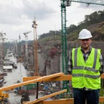

<!DOCTYPE html>
<html lang ="es"></html>
  <head>
    <meta charset= "UTF-8">
    <meta http-equiv="X-UA-Compatible" content="IE=edge">
    <meta name="viewport" content="width=divece-width, initial-scale=1.0">
    <link rel="icon" type="image/x-icon" href="img/icon.png">
    <link rel="stylesheet" type="text/css" href="style.css" />
    <link href="https://fonts.googleapis.com/css2?family=Open+Sans&display=swap" rel="stylesheet">
    <title>CV-Lsassara</title>
  </head>
  <body>
    <header>
      <div id="nameTitle">
        <h1>Leonardo Sebastián Sassara</h1>
        <h2>Ingeniero Civil</h2>
        <h2>Ingeniero Estructural</h2>
      </div>
      <div>
        <div id="languageButtons">
          <button id="esButton">Español</button>
          <button id="ptButton">Portugués</button>
          <button id="enButton">Inglés</button>
        </div>
        <div id="linkedin">
          <a href="https://www.linkedin.com/in/leonardo-sassara-18819a67/" target="_blank">
            
          </a>
        </div>
      </div>
    </header>
    <main>
      <div class="section1">
        <div id="personalInformation">          
          <h2>Información Personal</h2>
          
          <p><b>Nombre: </b>Leonardo Sebastián Sassara</p>
          <p><b>Nacionalidad: </b>Argentino/Italiano</p>
          <p><b>Fecha de nacimiento: </b> 11-Mayo-1979</p>
          <p><b>Dirección: </b>Calle 71 n° 424 La Plata, Buenos Aires, Argentina</p>
          <p><b>Teléfono: </b>+55 (221) 552-3427</p>
          <p><b>Email: </b><a href="mailto:lsassara@gmail.com">lsassara@gmail.com</a></p>
        </div>
        <div id="profile">
          <h2>Educación</h2>
          <p>Ingeniero Civil, Universidad Tecnológica Nacional
            Reg. La Plata, 2007</p>
          <h2>Perfil</h2>
          <p>Leonardo Sassara tiene más de 10 años de
              experiencia en obras hidráulicas realizando
              verificaciones y diseño de estructuras de hormigón
              armado con elementos finitos (FEM) y modelos
              BIM. También tiene experiencia en drenajes
              urbanos y vías de comunicación. </p>
        </div>
      </div>
      <div class="section2">
      <section id="experience">
        <h2>Experiencia</h2>
        <ul>
          <li>
            <h3>Stantec Argentina 2010/2020</h3>
            <h4>Ingeniero Estructural</h4>
            <hr>
            <h4>Represa La Barrancosa y Represa Cóndor Cliff, Santa Cruz, Argentina</h4>
            <h5>(Ing. Estructural)</h5>
            <p>
                Verificación de distintas estructuras de hormigón.
                Diseño y modelos 3d de las excavaciones de obras
                hidráulicas y vías de comunicación. Generación de
                los layouts. Vías de comunicación, Redes pluviales
            </p>
            <hr>
            <h4>Canal De Panamá, Third Set Of Locks Project, Panamá</h4>
            <h5>(Diseñador)</h5>
            <p>
                Diseño geométrico de vías de comunicación y
                generación de modelo hidráulico para redes de
                pluviales y coordinación de los layouts.
            </p>
            <hr>
            <h4>Hydroelectric Power Plant Cuyuni River, Guyana
                Goldfields Inc., Guyana</h4>
            <h5>(Diseñador)</h5>
            <p>
                Diseño geométrico de vías de comunicación y
                coordinación de los layouts.
            </p>
            <hr>
            <h4>Xtrata Copper Pachon S.A. Minera, Argentina</h4>
            <h5>(Diseñador) </h5>
            <p>
                Estudio de factibilidad, modelos 3d para cómputo
                de movimiento de suelo. Generación de los
                layouts.
            </p>
            <hr>
            <h4>Hidroeléctrica San Miguel, Duke Energy Chile
                Central, Chile</h4>
            <h5>(Diseñador)</h5>
            <p>
                Estudio de factibilidad, modelos 3d para cómputo
                de movimiento de suelo. Generación de los
                layouts.
            </p>
            <hr>
            <hr>
          </li> 
          <li>               
            <h3>ELEPRIT SA, Argentina 2009/2010</h3>
            <h4>Ingeniero Civil</h4>
            <h4>Vías de comunicación, Redes hidráulicas</h4>
            <h5>(Ingeniero de campo)</h5>
            <p>Gestión de obra, tareas técnicas administrativa, en
                obras viales, redes cloacales y pluviales.
            <hr>
            <hr>
          </li>
          <li>
            <h3>Petersen Thiele y Cruz, Argentina 2008/2009</h3>
            <h4>Ingeniero Civil</h4>
            <h4>Vías de comunicación, Redes hidráulicas</h4>
            <h5>(Ingeniero de campo)</h5>
            <p>Gestión de obra, tareas técnicas administrativa, en
                obras viales, redes cloacales y pluviales.
            </p>
            <hr>
            <hr>
          </li>
          <li>
            <h3>MAKO SACIFIA y C, Argentina 2007/2008</h3>
            <h4>Ingeniero Civil</h4>
            <h4>Vías de comunicación, Redes hidráulicas</h4>
            <h5>(Ingeniero de campo)</h5>
            <p>Control, gestión y proyecto de obra, en redes de
                agua y cloaca. Manejo del personal de obra y otros
            </p>
            <hr>
            <hr>
          </li>
          <li>
            <h3>Sudamericana de Aguas S.A., Argentina 2007/2007</h3>
            <h4>Ingeniero Civil</h4>
            <h4>Vías de comunicación, Redes hidráulicas</h4>
            <h5>(Ingeniero de campo)</h5>
            <p>
                Proyectos de redes de agua y cloaca. Realización
                de certificado de factibilidad y estudios de
                licitaciones.
            </p>
            <hr>
            <hr>
          </li>
        </ul>
      </section>
      <section id="skills">
        <h2>Habilidades</h2>
        <ul>
          <h4>Herramientas de diseño (BIM)</h4>
          <li>AutoCAD, AutoCAD Civil 3D, Revit</li>
          <h4>Herramientas informáticas</h4>  
          <li>Office, Access, Excel, Word, VBA, Python, C++</li>
          <h4>Herramientas elementos finitos (FEM)</h4>
          <li>SAP 2000, Abaqus, Math cad</li>
        </ul>
        <br>
      </section>
      <section id="language">
        <h2>Idiomas</h2>
        <ul>
          <li>Español (Nativo)</li>
          <li>Portugués (Fluente)</li>
          <li>Inglés (Fluente)</li>
          <li>Italiano (Básico)</li>                   
        </ul>
      </section>
      </div>
    </main>
    <footer>
      <div>
        <p> Ing. Civil  </p>
      </div>
      <div>
        <p> +55 (221) 552-3427  </p>
      </div>
      <div>
        <p>
        <a href="mailto:lsassara@gmail.com"> lsassara@gmail.com</a></p>
      </div>
    </footer>
  <script id="myScript" src="script.js"></script>
  </body>
</html>